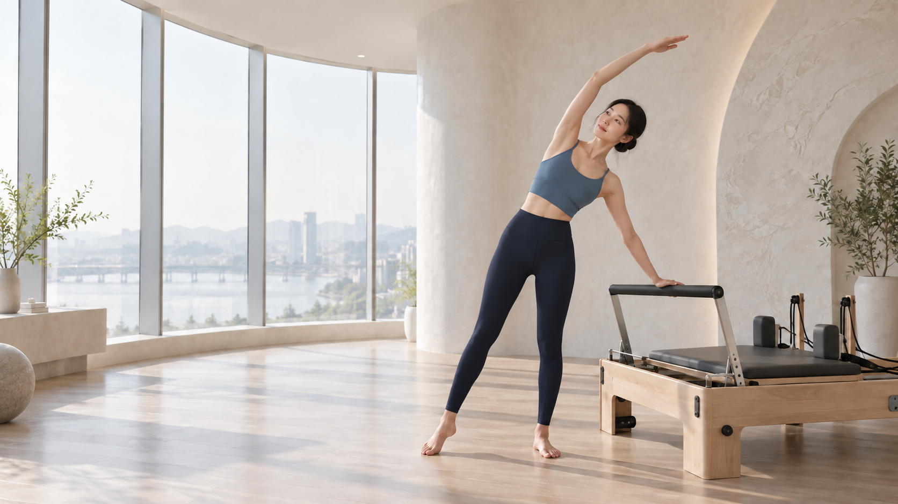

중립 정렬 찾기
서고, 앉고, 걷는 순간의 머리·갈비뼈·골반 위치를 관찰해 몸에 맞는 기준점을 찾습니다.
Posture · Balance · Breath
목·어깨의 긴장, 골반의 기울어짐, 흐트러진 중심을 섬세하게 살핍니다. 나를 억지로 바꾸는 운동이 아니라, 본래의 편안한 정렬을 찾아가는 필라테스입니다.

체형 교정은 한 자세를 억지로 유지하는 일이 아닙니다. 호흡과 코어, 관절의 움직임을 함께 연습하며 일상에서 반복되는 부담을 줄여가는 과정입니다.
서고, 앉고, 걷는 순간의 머리·갈비뼈·골반 위치를 관찰해 몸에 맞는 기준점을 찾습니다.
힘으로 버티기보다 호흡과 함께 몸통 안정근을 연결해 허리와 어깨의 불필요한 긴장을 덜어냅니다.
수업에서 찾은 감각을 업무 자세, 보행, 운동 습관에 이어갈 수 있도록 쉬운 큐를 익힙니다.
같은 자세 고민이라도 원인과 움직임의 습관은 모두 다릅니다. 1:1 레슨은 억지로 자세를 맞추기보다 관절이 편안하게 움직일 수 있는 범위를 먼저 살리고, 그날의 컨디션과 목표에 맞춰 가장 필요한 움직임에 집중합니다.
서 있는 자세부터 호흡, 관절의 움직임까지 살펴보고 몸이 편안해질 수 있는 개인별 기준점을 찾습니다.
운동 경험과 가동 범위에 맞춰 동작을 세밀하게 조절해 무리 없이 정확한 움직임을 익힐 수 있습니다.
힘이 잘못 들어가는 순간을 바로 확인하고 호흡과 정렬을 교정해, 작은 움직임도 제대로 느끼게 합니다.
몸의 반응과 움직임 변화를 꾸준히 확인하며 다음 수업의 방향을 정해 목표까지 차근차근 이어갑니다.
빠르고 큰 동작보다 정확하고 편안한 범위가 먼저입니다. 아래 기본 동작을 눌러 핵심 포인트를 확인해 보세요.
코로 숨을 들이마시며 갈비뼈가 옆과 뒤로 넓어지는 감각을 찾고, 길게 내쉬며 아랫배가 부드럽게 연결되는 것을 느껴보세요.
필라테스는 단순한 유행 운동이 아니라 몸과 마음의 통합을 지향해 발전한 움직임 체계입니다.
조셉 필라테스는 제1차 세계대전 전후 자신의 운동법을 발전시켰습니다. 호흡, 집중, 통제를 핵심에 두었습니다.
조셉과 클라라 필라테스는 뉴욕에 스튜디오를 열었고, 무용수와 공연 예술가들의 컨디셔닝과 회복에 널리 활용되었습니다.
오늘날 필라테스는 매트와 기구 수업으로 확장되어, 체력과 경험에 맞춰 조절 가능한 전신 운동으로 사랑받고 있습니다.
* 필라테스의 역사를 이해하기 위한 간략한 소개입니다.
하나를 골라 첫 수업에서 집중해 볼 움직임을 확인해 보세요. 통증이 있다면 운동 전에 의료 전문가와 상담하세요.
완벽한 자세보다 오늘의 몸을 알아차리는 것부터 시작해 보세요.
처음부터 둘러보기